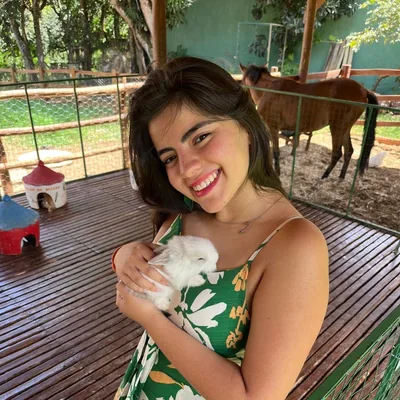
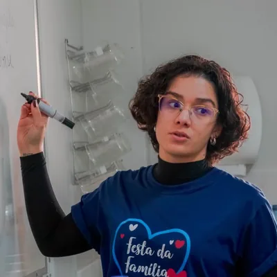
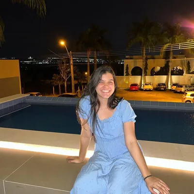
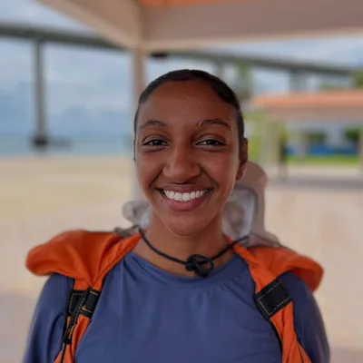
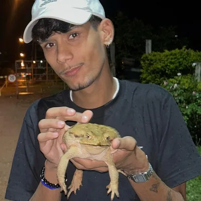

Amanda Brito
Monitora
Tenho 25 anos e curso Licenciatura em Biologia. Tenho muito interesse nas áreas
de entomologia e educação. Já fiz parte de alguns projetos de extensão e
monitorias e atualmente estou na Endêmica (empresa júnior) e estagiando. Se
precisarem de mim, estarei no LECC para ajudar vocês!
Amanda Lima
Monitora
Oiii! Meu nome é Amanda Lima, estou no sétimo semestre da Licenciatura em
Ciências Biológicas. Atualmente faço parte do LabCripto, onde atuo
principalmente com biologia molecular. Também sou monitora do Anki em Anatomia
Animal e participo das atividades do LACV. Tenho uma grande paixão por ensinar
e por compartilhar o que aprendo ao longo da minha formação.

Ana Júlia
Bolsista de extensão
Tenho 24 anos, estou no 11º período de licenciatura. Gosto muito das áreas de
microbiologia, evolução e zoologia, além da educação. Atualmente estagio no
laboratório de micologia e já fiz parte do PIBID e da gestão do CABio. Sou
comunicativa, adoro conversar e gosto muito de ser monitora, então, se
precisarem de mim, estou aqui!

Beatriz Flores
Monitora
Tenho 22 anos e atualmente estou no 10º semestre de Licenciatura em Biologia.
Já participei de gestões do CABio, fiz parte do PIBID e do Cerrado Visual. Hoje
componho a Articulação de Comunicação da ENEBio e atuo como professora de
Ciências e Laboratório. Conheci o LECC ainda no 3º semestre, com a disciplina de
Didática das Ciências Naturais. Me encantei pelo espaço e por todo o seu potencial.
João Victor
Monitor
Oii, eu sou o João, tenho 24 anos e estou no 8º semestre de Licenciatura em
Biologia. Atualmente estou estagiando na área de zoologia, mas meu maior
interesse é na educação. Conheci o LECC por meio de outra monitora e estou
animado para contribuir com esse espaço!

Lívia Neves
Bolsista de ensino
Tenho 21 anos, estou no 8º semestre de Biologia – licenciatura e faço parte
da Diretoria de Comunicação da A.A.A. Desnaturada. Tenho muito interesse em
genética e na docência. Também curso pedagogia e, atualmente, trabalho com
crianças em uma escola bilíngue. Adoro ensinar e não me imagino trabalhando em
outra área.
Mariana Higa
Monitora
Tenho 26 primaveras. Sou bióloga e estou cursando licenciatura em algum semestre
dessa UnB. Gosto muito de fisiologia, zoologia e educação. Já estive em alguns
projetos de divulgação científica e me identifico muito com a área. Atualmente
faço parte do PIBID e adoro ajudar os outros. Sempre que precisarem, podem me
dar um “oi” lá no LECC!

Mariana Reis
Monitora
Oie, sou a Mari Reis, muito prazer! Estou no 9º semestre de Biologia
(licenciatura) e trabalho com plantinhas (musgos) no LabCripto, além de fazer
parte do projeto de extensão do Jardim Louise Ribeiro, atuando no GT Extensão e
Ensino, e agora também faço parte do LECC! Quando não me encontrar nesses três
lugares, pode ter certeza que estarei me aventurando em campo, em algum esporte
ou dando a maior gargalhada com algum amigo!

Paulo Neres
Professor colaborador
Olá, meu nome é Paulo Neres. Sou professor biólogo da SEE/DF, formado pela UnB,
aluno de Biologia Bacharelado e pesquisador no Instituto Brasília Ambiental.
Durante a graduação sempre fui apaixonado pela educação e sei que essa é minha
vocação; trabalhei com diversas disciplinas de educação em Ciências. Atualmente
atuo na Coordenação de Extensão do IB, como apoio e suporte. Também faço parte
do CineBio UnB, projeto criado por mim e mais duas mulheres cientistas.